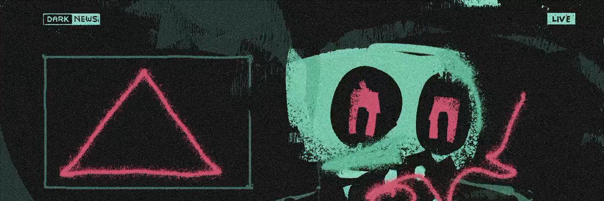
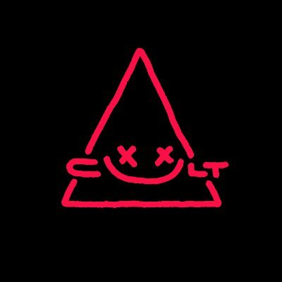

Maybe not the artists you wanted, but the artists you deserve
Members of seven Cult of Crypto Art group chats on X, listed A to Z with their profile text and links.
Cult of Crypto Art (CoCA) @CultCryptoArt
This directory never asks you to connect a wallet, sign anything, or log in. If a copy of this page does, it's fake.
Maintained by @basileus_eth
Loading directory…
No one matches that search. Clear the search box or turn a chat filter back on.